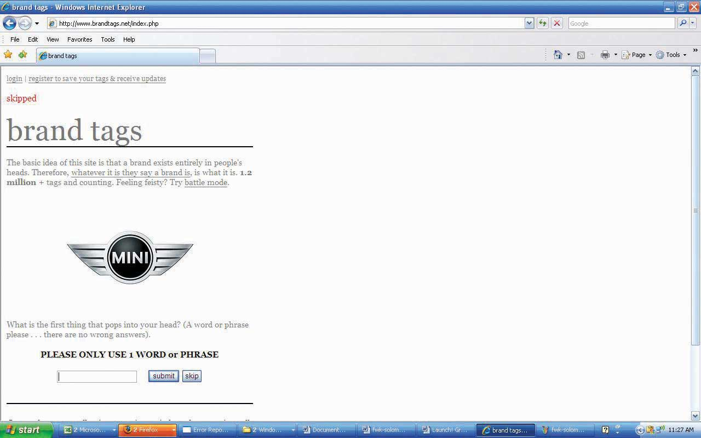

After studying this section, students should be able to do the following:
Sources of primary data include focus groups, customer interviews, and surveys the company conducts to understand the needs, behaviors, and reactions of consumers or other stakeholders such as business customers, vendors, or policymakers. Regardless of the data collection method, researchers conducting primary research need to decide whether to target a random sample of the entire population or to screen their participants according to a demographic, psychographic, or behavioral profile.
After John and Michelle reviewed the existing data, the next step was to speak to the people who know msnbc.com best—their employees. SS+K interviewed the key stakeholders within the organization including the president and representatives from editorial, design, ad sales, and technology. It was important for SS+K to understand how each of them perceived the brand, its challenges, and its opportunities.
After the interviews were conducted, in person by Joe Kessler or Melinda Moore, with Michelle, John, and Amit on the phone in New York taking notes, the AIU team (Michelle and John) started drawing some conclusions from those interviews.
They found that stakeholders agreed on interesting points and what they believed were the differentiators for msnbc.com versus their competitors. The research also showed that they each brought interesting and different ways to communicate this perceived difference. Some suggested approaching the communication through the technological advantages; others suggested touting original and high-quality journalism as the key message. Still other ideas involved better use of NBC personalities and the company’s multimedia experience.
One really encouraging finding from the interviews was the optimism that emerged about the future of the company and the future of the brand. The stakeholders noted that positive elements included the collaborative approaches within their vast organization, the increase in Web traffic, and the new online technologies that enable people to consume more and more information. Blogs, social networks, and other message-board technologies were going to continue to be important as the organization grew.
SurveysThe most common form of quantitative research, consisting of a questionnaire administered by mail or telephone, online, or through face-to-face “intercepts.” are the most common form of quantitative research. They can be conducted by mail or telephone, online, or through “intercepts” such as when a market researcher stops shoppers in a shopping mall to answer a few survey questions. Surveys ask consumers about their activities, interests, and opinions. This often sheds light onto which publications or media the target audience reads or watches, which enables the advertising agency to fine-tune its message.
Mail surveys increasingly are giving way to online questionnaires, because this format allows for instantaneous data collection and analysis (rather than waiting for printed surveys to be mailed and returned). Online questionnaires are also more flexible and cost much less. In both cases, however, while respondents are likely to be more honest because they can participate anonymously, we can’t be 100 percent sure who actually responds to the survey or whether the same person is responding multiple times. To design and administer your own surveys (for free!), check out http://www.surveymonkey.com.
Many online surveys basically reproduce their boring offline counterparts—scroll down the screen and answer a long series of questions by clicking on a number from 1 to 7. But some researchers take advantage of the Web’s unique capabilities as they create research instruments that are more vibrant and engaging for respondents. For example, an online survey could ask you to watch streaming video of different versions of an advertising execution and then prompt you to select the one you like best. Another might show you color pictures of facial expressions, landscapes, or celebrities and ask you to match them up with different brands. In one creative application, an online research company posted a gift finder on its Web site (http://www.youniverse.com). To come up with gift ideas for a friend, the user chooses from sets of photos to answer questions about the person such as “Their favorite color is…” or “Their house looks like.…” The program then matches the answers with everything from gadgets to books. This kind of technology allows clients like MSN, Vodafone, and others to gauge consumers’ reaction to ad campaigns and identify clusters of consumers that respond most positively to different products.Leila Abboud, “Picturing Web Shoppers: Start-Up Taps ‘Visual DNA’ to Gather Data,” Wall Street Journal, January 23, 2007, B9.
Brand Tags, another ingenious application of Web research, shows visitors the logos of big companies and asks them to type in the first word or phrase that pops into their head when they see the logo. Within a few days after it went live, the site attracted more than thirty thousand visitors. Results of these snap reactions are reported as a tag cloudA format for displaying survey results in which the size of a word corresponds to its frequency among responses; a frequently chosen response will appear very large on the screen, while a rarely chosen response will appear very small.—a format in which the size of the word corresponds to its frequency among responses. Frequently submitted words are shown in giant type, while rarely submitted ones look tiny on the screen. This type of data is merely suggestive because we can’t be sure who responds, but it can be an eye opener to advertisers. For example, two popular responses for Wal-Mart are cheap and evil, one of Burger King’s largest tags is fat, while people label Toyota with words like quality and reliable—but also boring.Tom Weber, “What Do People Think About Your Brand? Here’s a New Way to Find Out,” Wall Street Journal Online, May 13, 2008, http://blogs.wsj.com/buzzwatch/2008/05/13/what-do-people-think-about-your-brand-here’s-a-new-way-to-find-out (accessed July 21, 2008).
Telephone surveysA means of soliciting feedback by calling consumers by phone; this technique has lost popularity as respondents screen calls or put themselves on do-not-call lists. offer even more flexibility in questioning, but they suffer from higher cost and often have lower participation because respondents screen calls or put themselves on do-not-call lists. Unfortunately, in recent years telemarketers who masquerade as survey-takers poisoned the well for legitimate research companies; in some cases when they call (usually during dinner!) they lure unsuspecting respondents into answering questions until they reveal toward the end that they’re actually selling something.
However, as mobile phones continue to evolve into the “third screen” for many of us (the first two are the TV and the computer monitor), it’s likely that enterprising researchers will discover new ways to collect people’s feedback via their phones. For example, the startup company Mimieo offers an application that enables a client to capture respondents’ emotional reactions to an ad or product on their iPhones.http://www.mimieo.com/corp/home.aspx (accessed July 21, 2008); Laurie Sullivan, “Marketing Feedback Cards Go Digital via Cell Phones,” Marketing Daily, February 27, 2008, http://www.mediapost.com (accessed February 27, 2008).
Face-to-face interviewsData gathering technique in which a researcher speaks directly with a respondent, asking questions from a predetermined script or letting the respondent say what he or she wants. provide the most flexibility in questioning—it’s clear to the researcher if the respondent is having difficulty understanding the question—but they are time consuming and expensive. They are also less likely to yield truthful results, for two reasons. First, being face to face with the interviewer, respondents may tend to give answers they think the interviewer wants to hear. Second, the interviewer’s biases (none of us is bias free, much as we may wish to think of ourselves that way) may skew the results.
Figure 5.4 Brand Tags
The logic behind deprivation researchTechnique that indicates how loyal consumers are to a brand by taking it away from them. is to figure out how loyal consumers are to a brand by taking it away from them. Dunkin’ Donuts forced a group of its customers to drink Starbucks coffee for a week instead. Verizon Wireless did something even more impressive: the company got a group of teens to give up using cell phones for an entire weekend.
Burger King gets hard-core Whopper fans to go without their burger fixes and keep journals about how they deal with this indignity. This strategy evolved into a recent successful ad campaign the chain’s ad agency Crispin Porter + Bogusky called “Whopper Freakout.” The TV and online ads captured real customers at two Nevada outlets who were informed that the Whopper was no longer on the menu. These were not happy campers: one customer cried, “What are you going to put on the logo now—home of the ‘Whatever we got’?”Suzanne Vranica, “Hey, No Whopper on the Menu?! Hoax by Burger King Captures Outrage,” Wall Street Journal, February 8, 2008, B3. For a closer look at this campaign, check out http://www.whopperfreakout.com/embed.swf.
After conducting the internal stakeholder interviews and reviewing the existing data, msnbc.com and SS+K set out to understand the consumer’s point of view and also to test a few hypotheses they’d drawn based on what they currently knew.
These hypotheses revolved around three themes: (1) functional (What role does online news play in consumer’s lives?), (2) attitudinal (How do consumers feel about msnbc.com?), and (3) thematic (Are there certain categories of news to which consumers look?). It was important to understand what need they currently met in their consumers’ lives, and they designed their questions for the group to explore those areas.
They planned to explore these ideas and flesh them out in focus groups, which we’ll discuss next.
Often, an advertising campaign seeks to understand more subtle (or deeply held) attitudes than a survey can capture. This requires a more exploratory, interactive approach, such as one-on-one interviews between a consumer and a researcher or through a focus groupA small group of consumers, led by a trained facilitator, who discuss what they like and dislike about a product. discussion (a discussion with a small group of consumers, led by a trained facilitator). The professional moderator is crucial to this process, preventing vocal members from overwhelming or dominating the group and effectively handling answers that don’t provide meaningful information or answers that a group member gives who is merely trying to impress other members (yes, this happens a lot!). Focus group discussions usually involve six to ten group members, and discussions are sometimes held in a room with a one-way mirror so that agency executives can watch or videotape the discussion—listening to real people talk about their product can be a real eye-opener for these folks!
For example, the city of Las Vegas decided to use focus groups to get a sense of how it should advertise itself in other countries as a tourist destination. The city worried that its “What happens in Vegas stays in Vegas” campaign in the United States might not play well in countries like Mexico, which has a more Catholic and conservative population. To find out, the city held focus groups with travelers. The results of the focus groups showed that Mexicans were comfortable when the Vegas story lines fit with family customs and did not allude to casual sex. In the United Kingdom, in contrast, focus groups showed that the ad campaign needed more sex, not less, to catch the attention of U.K. audiences (who tend to see more provocative and explicit advertising). About a dozen focus groups of middle- and upper-income British men and women under age fifty-five revealed that the American tagline wasn’t compelling enough for irreverent British tastes. “In the U.S. we think our slogan and ads push the envelope, [but in Britain] for our message to have the same impact we discovered that we need to make it edgier,” said Rob O’Keefe, account director at R&R Partners, the agency for the Las Vegas tourism group. “We need a bolder brand statement articulating that you can do things in Vegas you can’t do anywhere else.”Quoted in Joan Voight, “How to Customize Your U.S. Branding Effort to Work around the World,” Adweek Online, September 3, 2007, http://www.nationaljewelernetwork.com/aw/esearch/article_display.jsp? vnu_content_id=1003634197 (accessed September 3, 2007).
Focus group disadvantages to watch out for are that people may be too tired to think after a hectic day, or that they may say what they think the researcher wants to hear, or that they may even feel pressured to make things up. Also, focus groups take people out of their normal lives and put them into a quiet room, which may lose the context of the real experience. For this reason, individual or group interviews in natural settings may be more desirable. Having a collaborative discussion with consumers in places where people actually use the products in question, such as a bar or laundromat rather than a research lab or an agency’s conference room, may provide more fruitful ideas. Some companies try to get consumers’ input across multiple stages, from focus groups to natural settings like supermarkets (if the product is a packaged food product) to journal entries that consumers record. This multifaceted approach imparts richness to the ideas, rather than just a slice that a phone interview or focus group can yield.
John Mayer
(click to see video)Could you give John Mayer your honest opinion about a new song?
Johanna Steen, who works with Catherine Captain at msnbc.com, was the leader of the focus groups conducted in various locations around the country. Working with the team at SS+K led by Michelle and John, Johanna facilitated the discussion and outlined conclusions so the team could determine what more they knew about the msnbc.com consumers and if they needed anything more.
Finally, qualitative data can be gathered through an ethnographic studyA data gathering method in which a researcher visits a person’s home or business and directly observes how the customer uses a product in a realistic environment., in which a researcher visits a person’s home or business and directly observes how the customer uses a product. For example, when it designed its Quicken software, Intuit sent software engineers to consumers’ businesses to watch how they used accounting software. The program was called “follow me home,” and the reason for watching consumers in their homes was to seek a natural, unscripted setting. Intuit continues to listen to customers through all sorts of channels, including blog posts and feedback buttons on the software itself. The 2006 version of Quicken, for example, included more than 121 customer-recommended improvements.http://www.fastcompany.com/magazine/99/open_customer-intuit.html (accessed on September 9, 2007).
The ad agency Saatchi & Saatchi went even further: when it was working on a new campaign for its client JC Penney, the agency assigned staffers to hang out with more than fifty women for several days. They helped the women clean their houses, carpool, cook dinner, and shop as they observed the women’s behaviors and emotions. This may not be the most glamorous task for the researcher (do they do windows?), but as Saatchi’s global head of strategic planning observed, “If you want to understand how a lion hunts, you don’t go to the zoo—you go to the jungle.”Suzanne Vranica, “Ad Houses will Need to be More Nimble: Clients are Demanding More and Better Use of Consumer Data, Web,” Wall Street Journal, January 2, 2008, B3.
After gaining some insights from the focus groups, Michelle Rowley and John Richardson considered doing ethnographies in order to further understand what really drives the news junkie, but they, along with Catherine Captain, decided to conduct triad interviewsResearch technique in which a moderator interviews three people who have been screened to fit the desired demographic, psychographic, and behavioral profile. instead. Using this technique, a moderator interviews three people who have been screened to fit the desired demographic, psychographic, and behavioral profile. The interviewers gave these respondents a homework assignment before the interviews: they were asked to change their usual routine by trying different news resources before they returned to discuss their experiences together. The inclusion of three similar respondents makes it easier for the researchers to identify shared themes or feelings versus sentiments that one individual may express that are more idiosyncratic and perhaps not as useful. During the triad interviews, the moderator worked with a guide to help her probe for additional details. This guide was agreed upon by the research company, SS+K, and msnbc.com. The results of this final piece of research informed the next steps in the campaign development process, which is the communications brief.
Primary data often is richer and more directly useful, but it also has its downsides. The following are primary data’s advantages:
The following are primary data’s disadvantages:
Primary data refers to information an agency or its client collects to specifically address the current campaign. There are several ways to collect primary data, ranging from one-on-one interviews to large-scale mail or online surveys.